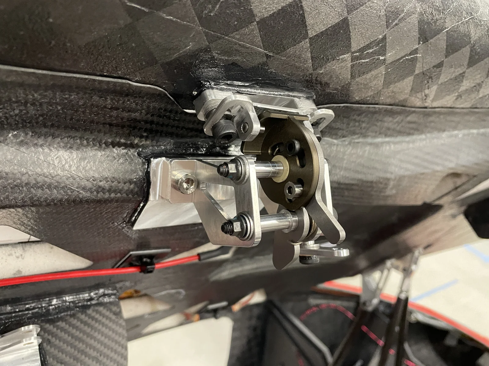
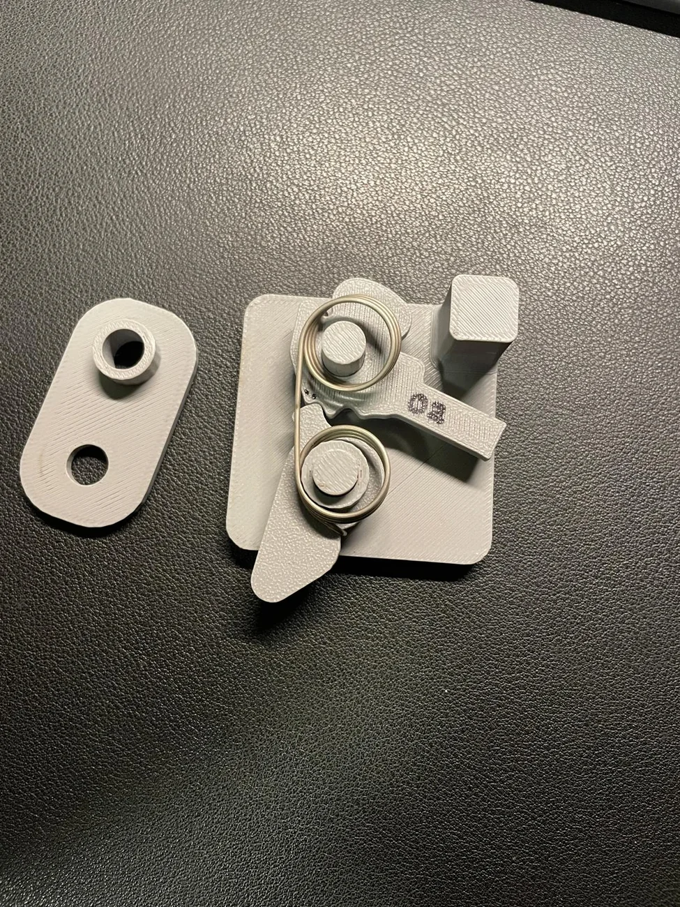
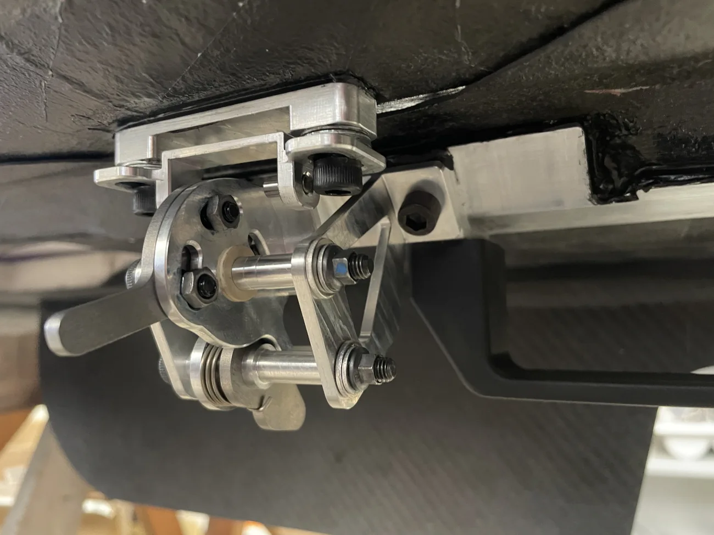

Mechanism design · Rapid prototyping
Two-stage canopy latch
I designed a latch that could release from inside or outside the car to support a 15-second emergency-exit requirement. I used filament-printed prototypes to refine two-stage latch geometry and torsion-spring return.
The latch I designed met the 15 s emergency-exit requirement. Every driver completed the test in 10 s.
Design decisions and testing
I examined an automotive latch and developed a hook-and-pin mechanism for our canopy. The hook had to rotate to release, and a cable coupled the latches for simultaneous operation.
I used 3D-printed prototypes to check engagement and spring return, then printed a fixture to align the brackets during bonding. When testing revealed wear, I replaced the aluminum contact parts with steel and used them in the race.
During scrutineering, each driver was timed individually as they released the latch and exited the car.